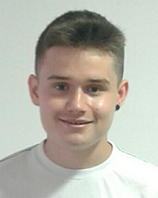

About me
En esta página podrás conocer un poco más sobre mí.
Descripción personal
Markel Urrestarazu Insausti es un chico de 19 años de Tolosa. Es un chico alegre, al que le gusta mucho hablar y reírse. Vive cada momento como si fuera el último, aunque eso a veces le puede llevar a tener comportamientos inadecuados. Es muy amigo de sus amigos, le gusta compartir tiempo tanto con ellos como con su familia. Además, es un apasionado del deporte, y para ser más exactos, del fútbol y del baloncesto. Durante su etapa escolar, jugó en el equipo de baloncesto del pueblo, pero lo dejó para centrarse en sus estudios. Actualmente es estudiante de Comunicación + Tecnologías para la Comunicación Audiovisual y Multimedia en la Universidad de Deusto.
Estudios realizados
- Educación Primaria en Samaniego Herri Ikastetxea
- E.S.O. y Bachillerato en Orixe BHI
- Comunicación + Tecnologías para la Comunicación Audiovisual y Multimedia en la Universidad de Deusto
Gustos y aficiones
Como bien he mencionado anteriormente, me gusta pasar mi tiempo libre con los amigos: dar una vuelta por el pueblo, ir a tomar un café, o incluso quedarnos en casa de algún amigo para jugar a videojuegos. Además, he mencionado que me gusta el deporte y en concreto, el fútbol y el baloncesto. Soy un apasionado de ambos deportes. Soy abonado de la Real Sociedad, y también me gusta ir a ver partidos del Gipuzkoa Basket.